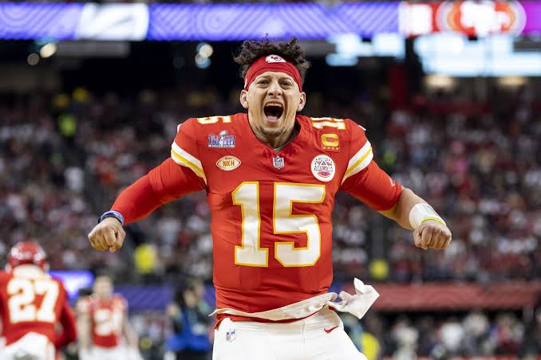
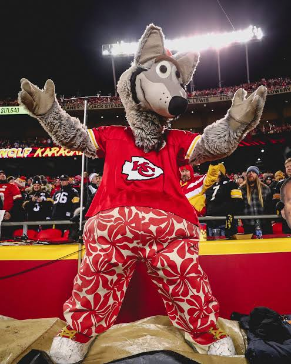

Kansas City Chiefs
Historia del equipo
Los Kansas City Chiefs, fundados en 1960, son conocidos por su apasionada afición y por ser uno de los equipos más competitivos en la era moderna de la NFL.
Super Bowls ganados
Los Kansas City Chiefs han ganado 3 Super Bowls en los años 1969, 2019 y 2022.
Mejor jugador de la historia
El mejor jugador en la historia de los Chiefs es el mariscal de campo Patrick Mahomes, quien ha redefinido el juego y ganado dos Super Bowls.
Mascota del club
La mascota oficial de los Kansas City Chiefs es KC Wolf, un lobo simpático que ha sido parte de la franquicia desde 1989.